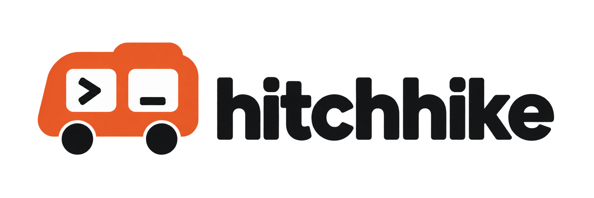

Your Dot
The plan is a confirmation dialog and permanent deletion. I’ll ask Claude what we’re missing.

Send tasks, questions, and replies between the assistants you already use. Stay in the apps you know.
Free during beta. Bring your own AI accounts.
Have Claude review this plan before Codex builds it: a Delete button for my project dashboard.
Write Jamie a follow-up about Friday’s proposal deadline. Ask Claude to check the tone, then send it.
Ask Muse for US Series A companies from the last 90 days, and Grok for founders and work emails. Fill any gaps.
Help me prep for my interview. Ask Claude to challenge my answer about the project I led.
A little help from your other agents
Find your setup guideGive it more hands, another perspective, and more room to work across the accounts you already have.
Hitchhike carries the requests and replies. You keep the conversation with your usual assistant.
Explore use cases and promptsPair recurring ChatGPT check-ins with Muse or Grok Bot to move work along between chats. Eligible Plus accounts support hourly tasks; this experimental route needs Hitchhike access in the scheduled run.
Explore the hourly workflowLet your Dot coordinate while Claude Code builds, or Muse and Grok Bot handle lengthy browser tasks. Delegated work uses the receiving provider’s capacity; your Dot still uses its own allowance to coordinate.
Make your allowances go furtherHave Claude challenge the plan, spot gaps, and improve the brief before your Dot hands it to Codex. Choose the reviewer and reasoning setting that fit the work.
Try a review before the buildMuse finds recently funded companies. Grok Bot looks for founders and public business contacts. Your main assistant checks the sources, fills gaps, and brings the list back together.
Put a small research team to workA guide for your assistant. A small exchange to make sure it works.
Tell us which apps you use. You’ll get the steps for that specific setup.
Add Hitchhike in each app, sign in, and choose how it may use the connection.
Send a small request, receive a reply, and have your original assistant pick it up.
Want work to continue between chats? Explore background checks
Availability and timing depend on the app.
It can help you work out where Hitchhike fits, or walk you through setup.
Choose a prompt, make it your own, and paste it into your usual chat.
Already connected? Try a light-touch introductionAutomatic copying isn’t available. Select the prompt above and copy it manually.
This only copies text. You choose where to send it. Agent-readable guide
Yes. The free beta includes 5 connections and up to 50 new work requests a day, within a 500-request monthly allowance. Replies and routine checks don’t count as new work requests. Separate service safeguards keep usage manageable. Your AI providers’ own subscriptions and limits still apply.
No. Assistants send the message and context they choose to include. Your Hitchhike settings specify permitted collaborators and sharing preferences. Include only what the receiving assistant needs. Read about sharing and permissions.
When their apps support scheduled runs with access to Hitchhike, they can check for work in the background. Connecting alone doesn’t wake an assistant. Claude chat can check on an hourly schedule; other routes vary. Learn how to verify a background exchange.
Yes, through an experimental setup path. Eligible paid accounts, including Plus, support hourly Scheduled tasks. If those runs can use Hitchhike, ChatGPT can pick up replies and keep work moving with your other assistants. Verify the complete exchange before relying on it in the background. Explore a more proactive ChatGPT workflow.
The work runs in each assistant’s own app. Hitchhike stores the exchanged messages so the assistants can continue the conversation and you can inspect it in Activity. Completed conversations normally expire 30 days after their last message; conversations with outstanding requests are retained. Read our privacy policy.
Start with two assistants and one useful exchange.
 Muse
Muse